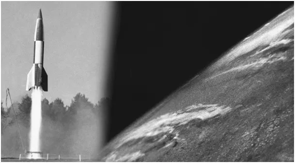
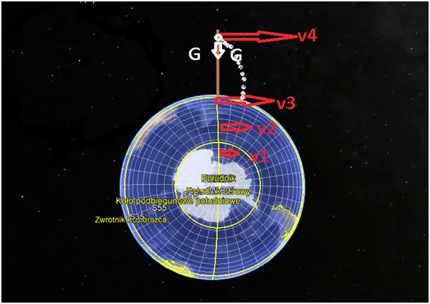
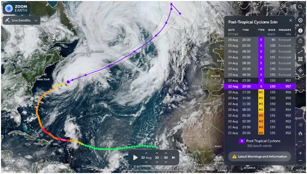
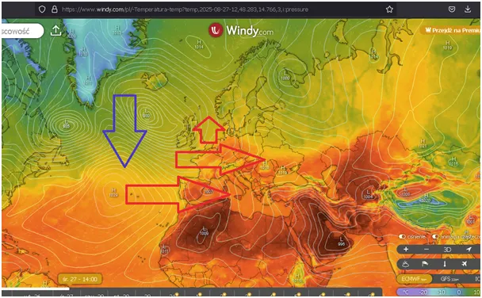

Świat jest prosty, ale kamień puszczony swobodnie spada po skosie!
Pozorna siła Coriolisa jest prosta do wyjaśnienia, ale niestety często gmatwana w podręcznikach.
Huragan Erin wykonał już sporo pracy, ale jeszcze przed nim dużo do zrobienia. Jak pamiętamy z podstawówki energia jest równa pracy wykonanej kosztem tej energii. W XIX wieku wykazali to James Joule (stąd te dżule w słoninie) i Gustave de Coriolis. Ten Coriolis, któremu udało się zdefiniować "pozorną siłę Coriolisa". To właśnie ta siła, siła bezwładności układu rotującego powoduje, że niże kręcą się w lewo a za równikiem, na południu w prawo. Ta siła sprawia wielu umysłom trudność, ale gdy się sprawy uprości jest to igraszka. Postawmy na równiku w Afryce wysoką wieżę i puszczajmy z tej wieży kamienie prosto w dół. W myśleniu pomijamy opór powietrza. Ziemia rotuje, obrót w 24 h, to jest prędkość kątowa, czyli ludzie na równiku (śmigają po okręgu jak prędkość 40 075 km/24h = v3 = 1669,79 km/h. W Bydgoszczy na 53 równoleżniku, który ma 40 075 km × 0,6018 (cosinus 53 st.) ≈ 24 000 km. Zatem w Bydgoszczy prędkość linowa po okręgu v2=1000 km/h, bo 24 000km/24h.

Jeśli teraz z wysokiej wieży na równiku upuścimy kamień będzie on napędzany dwiema siłami: siłą bezwładności w torze poziomym z powodu prędkości v4 oraz siłą grawitacji G pionowo w dół. Wektory te dadzą tor po fragmencie spirali i kamień upadnie daleko przed podstawą wieży, z której został swobodnie upuszczony. Cuda? Nie! Kosmos! Siłę bezwładności w ruchu po okręgu czujemy na każdym zakręcie, gdy nasze auto chce wyrwać się z trasy.

Zatem wszystko co spada nie spada pionowo, ale skośnie na zachód i odwrotnie, wystrzelone pionowo rakiety lecą skośnie na wschód. Atmosfera to ciągłe mieszanie się powietrza w pionie, zimne opada a ciepłe się unosi. Zimne leci na zachód, ciepłe na wschód, stąd północny obszar cyklonu przesuwa się na zachód a południowy na wschód i tak to niże kręcą się u nas w lewo, a na półkuli południowej w prawo. Zagadka rozwiązana. Z tego samego powodu na naszej półkuli prawe brzegi rzek są bardziej narażone na erozje, taka to siła już nie tajemnicza tkwi w wirowaniu Ziemi.
Ten najprostszy przypadek zaczyna się komplikować gdy np. strzelamy rakietami z Europy w Londyn, jak to czynili Niemcy. Tam zachodzi podobna sytuacja, bo Holandia się kręci szybciej niż Londyn i pociski początkowo nie trafiały w cele. Dopiero matematycy poradzili żołnierzom, jakie poprawki muszą dodać do trajektorii swych rakiet.

Teraz huragan Erin to już tylko głęboki niż post-tropikalny i przyniesie dużo ciepła i wilgoci nad Europę, kończąc zimny incydent sierpniowy. Dla nowych czytelników mój raport dlaczego w najbliższych dekadach możemy się spodziewać częstych ochłodzeń, nie tylko zimą: "Kosmiczna prognoza do 2045. Globalne oziębienie!" https://pawelklimczewski.pl/2024/02/03/kosmiczna-prognoza-do-2045-globalne-oziebienie/
Fot: Pierwsze w historii zdjęcia Ziemi z Kosmosu zrobione w 1946 ze zdobytej na Niemcach rakiety V2.
Paweł Klimczewski